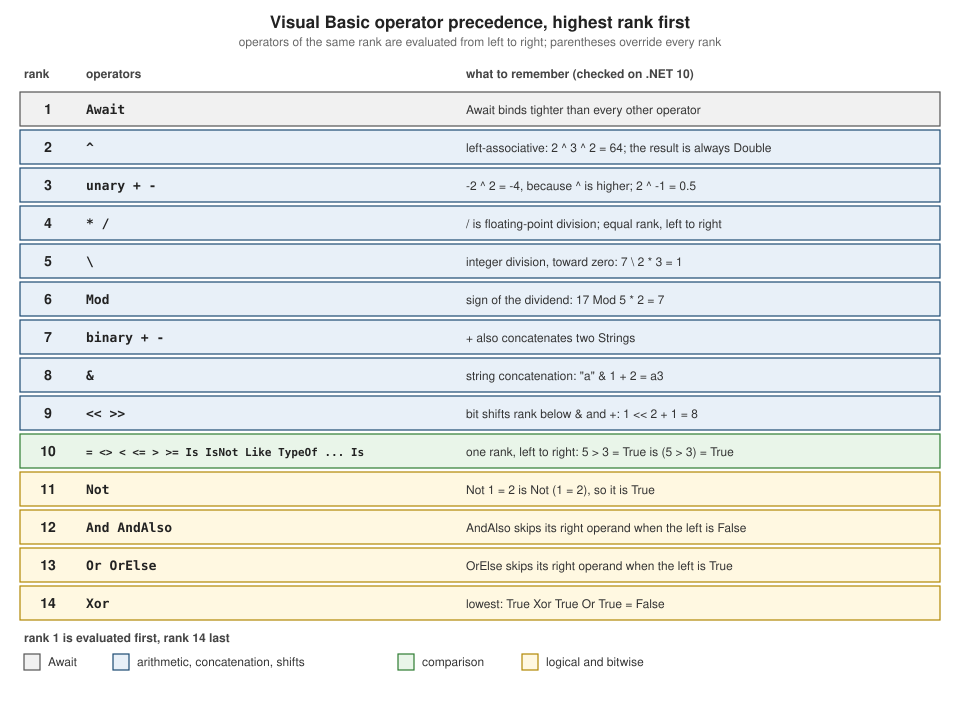

Operators and Expressions
|
This content was generated with the assistance of AI and should be verified against the official documentation before being relied on in production. |
This page is written against Visual Basic 17.13 on .NET 10 (SDK 10.0.402) and was checked on 2026-10-19. Every example is
a complete console program that starts with Option Strict On, was built with warnings treated as errors and was run in
the .NET 10 SDK container (Linux, invariant culture, so decimal points and date formats are those of the invariant culture); the output
shown is real output. The examples that are meant to fail say so, and show the compiler messages that the SDK printed.
Results that depend on Option Strict Off were checked in a separate scratch project and are given as a table, because the
section’s examples never switch the option off (the one file that does is on
Early and Late Binding).
Operators are where Visual Basic differs from C# most often without looking different: / always produces a floating-point
number, \ is integer division, ^ is exponentiation, & concatenates, = is both comparison and assignment, Not, And and
Or serve logic and bit manipulation at once, and AndAlso and OrElse are the short-circuit operators. Most mistakes in
beginner code come from carrying C# or VB6 habits across one of these. The statement forms that use them are on
Control Flow; the conversions that appear in operands on
Type Conversions; how to define an operator for your own type on
Operator Overloading and Equality.
| Family | Operators | C# counterpart |
|---|---|---|
Arithmetic |
|
|
Concatenation |
|
|
Comparison |
|
|
Reference and type |
|
|
Pattern |
|
none; |
Logical and bitwise |
|
|
Bit shift |
|
|
Assignment |
|
the same, plus |
Conditional |
|
|
Null-conditional |
|
|
Names and types |
|
|
Version notes: AndAlso, OrElse and the compound assignments are in Visual Basic .NET 2002, the shifts and their compound
forms in 2003, IsNot in Visual Basic 2005, the If operator in Visual Basic 9, Await in Visual Basic 11, and ?., NameOf and
string interpolation in Visual Basic 14. The rest are inherited from classic Visual Basic.
Precedence and associativity
When an expression mixes operators, the operator of the higher rank binds first; operators of the same rank are evaluated
from left to right (every Visual Basic binary operator is left-associative, including ^). The ladder has fourteen ranks.
The Learn page lists the same fourteen ranks, with Xor last; the check below confirms the order of Or and Xor.

Option Strict On
Module Program
Private Sub Show(expression As String, value As Object)
Console.WriteLine(expression.PadRight(26) & "= " & CStr(value))
End Sub
Sub Main()
Show("2 + 3 * 4", 2 + 3 * 4)
Show("-2 ^ 2", -2 ^ 2)
Show("2 ^ 3 ^ 2", 2 ^ 3 ^ 2)
Show("2 ^ -1", 2 ^ -1)
Show("8 / 4 / 2", 8 / 4 / 2)
Show("7 \ 2 * 3", 7 \ 2 * 3)
Show("7 * 2 \ 3", 7 * 2 \ 3)
Show("17 Mod 5 * 2", 17 Mod 5 * 2)
Show("""a"" & 1 + 2", "a" & 1 + 2)
Show("1 + 2 & 3 + 4", 1 + 2 & 3 + 4)
Show("1 << 2 + 1", 1 << 2 + 1)
Show("5 > 3 = True", 5 > 3 = True)
Show("Not 1 = 2", Not 1 = 2)
Show("True Or False And False", True Or False And False)
Show("True Xor True Or True", True Xor True Or True)
Show("True Or True Xor True", True Or True Xor True)
Show("Not True And False", Not True And False)
End Sub
End Module2 + 3 * 4 = 14
-2 ^ 2 = -4
2 ^ 3 ^ 2 = 64
2 ^ -1 = 0.5
8 / 4 / 2 = 1
7 \ 2 * 3 = 1
7 * 2 \ 3 = 4
17 Mod 5 * 2 = 7
"a" & 1 + 2 = a3
1 + 2 & 3 + 4 = 37
1 << 2 + 1 = 8
5 > 3 = True = True
Not 1 = 2 = True
True Or False And False = True
True Xor True Or True = False
True Or True Xor True = False
Not True And False = FalseRead the results as the traps they are:
-
-2 ^ 2is-4. In Visual Basic exponentiation binds tighter than unary minus (as in mathematics, and unlike a calculator that negates first).2 ^ -1is accepted and is0.5. -
2 ^ 3 ^ 2is64, not512: the operator is left-associative,(2 ^ 3) ^ 2. C# has no operator, and mathematics uses right-associative powers, so a reader coming from either expects512. -
\ranks below*and/, andModranks below\.7 \ 2 * 3is7 \ 6, which is1. -
&ranks below+and-:"a" & 1 + 2is"a3", and1 + 2 & 3 + 4is"37". This is the reverse of what a C# reader sees with+, where"a" + 1 + 2is"a12". -
The shift operators rank below
+:1 << 2 + 1is1 << 3, which is8. -
Notranks below the comparison operators, soNot 1 = 2isNot (1 = 2). This is the opposite of C#, where!binds to the single operand next to it. WriteNot (a = b)or, better,a <> b. -
The comparison operators share a rank, so
5 > 3 = Trueis(5 > 3) = True. Never chain comparisons. -
Andranks aboveOr, andXorranks belowOr.
When an expression mixes more than two ranks, add parentheses; the compiler does not warn about anything above.
Arithmetic and result types
Option Strict On
Module Program
Private Sub Show(expression As String, value As Object)
Console.WriteLine(expression.PadRight(30) & CStr(value).PadRight(8) & TypeName(value))
End Sub
Sub Main()
Dim a As Integer = 7, b As Integer = 2
Show("7 + 2", a + b)
Show("7 - 2", a - b)
Show("7 * 2", a * b)
Show("7 / 2 (floating-point)", a / b)
Show("7 \ 2 (integer)", a \ b)
Show("7 Mod 2", a Mod b)
Show("7 ^ 2 (always Double)", a ^ b)
Show("-7 \ 2 (toward zero)", -a \ b)
Show("-7 Mod 2 (sign of dividend)", -a Mod b)
Show("7 Mod -2", a Mod -b)
Show("7.5 Mod 2", 7.5 Mod 2)
Show("-a", -a)
Dim small As Byte = 50, otherByte As Byte = 100, tiny As Short = 100, otherShort As Short = 200
Dim wide As Long = 5, ratio As Single = 1.5F, money As Decimal = 2D
Show("Byte + Byte", small + otherByte)
Show("Short * Short", tiny * otherShort)
Show("Integer + Long", a + wide)
Show("Integer + Single", a + ratio)
Show("Integer + Decimal", a + money)
Show("Integer / Integer", a / b)
Show("Long \ Integer", wide \ b)
Show("Single ^ Integer", ratio ^ b)
Show("Decimal / Integer", money / b)
Show("Integer + String text", a & "text")
End Sub
End Module7 + 2 9 Integer
7 - 2 5 Integer
7 * 2 14 Integer
7 / 2 (floating-point) 3.5 Double
7 \ 2 (integer) 3 Integer
7 Mod 2 1 Integer
7 ^ 2 (always Double) 49 Double
-7 \ 2 (toward zero) -3 Integer
-7 Mod 2 (sign of dividend) -1 Integer
7 Mod -2 1 Integer
7.5 Mod 2 1.5 Double
-a -7 Integer
Byte + Byte 150 Byte
Short * Short 20000 Short
Integer + Long 12 Long
Integer + Single 8.5 Single
Integer + Decimal 9 Decimal
Integer / Integer 3.5 Double
Long \ Integer 2 Long
Single ^ Integer 2.25 Double
Decimal / Integer 1 Decimal
Integer + String text 7text StringSource: Arithmetic Operators
| Operator | Rule |
|---|---|
|
the result has the wider of the operand types. When both operands are |
|
floating-point division: |
|
integer division: operands are converted to integers and the result truncates toward zero ( |
|
remainder; the sign follows the dividend ( |
|
exponentiation; operands are converted to |
unary |
negation; |
Dim q As Integer = a / b therefore does not compile under Option Strict On (BC30512, Double to Integer), and with
Option Strict Off it compiles and rounds: 7 / 2 becomes 4 and 5 / 2 becomes 2, because the conversion rounds to the nearest
even integer (banker’s rounding), not toward zero. The fix is a \ b when you want an integer quotient, or an explicit
CInt(a / b) when you want the rounded one. Math.DivRem returns quotient and remainder together, Math.Floor and
Math.Ceiling give the other directions, and Math.Pow is what ^ compiles to. Details of rounding are on
Numbers and Math.
Integer division on floating-point operands compiles only with an explicit conversion:
Option Strict On
Module Program
Sub Main()
Dim a As Double = 10.5, b As Double = 2
Console.WriteLine(a \ b)
End Sub
End ModuleProgram.vb(6,27): error BC30512: Option Strict On disallows implicit conversions from 'Double' to 'Long'.
Program.vb(6,31): error BC30512: Option Strict On disallows implicit conversions from 'Double' to 'Long'.Wrap the operands (CLng(a) \ CLng(b)) if you really want that, or use Math.Floor(a / b) or Math.Truncate(a / b).
Division by zero, infinities and NaN
What happens when the divisor is zero depends on the operator and the operand type, not on the operator alone:
Option Strict On
Module Program
Private Sub Attempt(label As String, calculation As Func(Of Object))
Try
Console.WriteLine(label.PadRight(26) & "-> " & CStr(calculation()))
Catch ex As Exception
Console.WriteLine(label.PadRight(26) & "-> " & ex.GetType().Name)
End Try
End Sub
Sub Main()
Dim ten As Integer = 10, zero As Integer = 0
Dim tenD As Double = 10, zeroD As Double = 0
Dim tenM As Decimal = 10D, zeroM As Decimal = 0D
Attempt("Integer / Integer", Function() ten / zero)
Attempt("-Integer / Integer", Function() -ten / zero)
Attempt("0 / 0 (Integer)", Function() zero / zero)
Attempt("Integer \ Integer", Function() ten \ zero)
Attempt("Integer Mod Integer", Function() ten Mod zero)
Attempt("Double / Double", Function() tenD / zeroD)
Attempt("Double Mod Double", Function() tenD Mod zeroD)
Attempt("Decimal / Decimal", Function() tenM / zeroM)
Attempt("Decimal Mod Decimal", Function() tenM Mod zeroM)
Attempt("Single / Single", Function() 1.0F / CSng(zeroD))
Attempt("MinValue \ -1", Function() Integer.MinValue \ (zero - 1))
Attempt("Math.Abs(MinValue)", Function() Math.Abs(Integer.MinValue))
Console.WriteLine("NaN = NaN : " & (Double.NaN = Double.NaN))
Console.WriteLine("IsNaN : " & Double.IsNaN(zeroD / zeroD))
Console.WriteLine("IsInfinity: " & Double.IsInfinity(tenD / zeroD))
End Sub
End ModuleInteger / Integer -> Infinity
-Integer / Integer -> -Infinity
0 / 0 (Integer) -> NaN
Integer \ Integer -> DivideByZeroException
Integer Mod Integer -> DivideByZeroException
Double / Double -> Infinity
Double Mod Double -> NaN
Decimal / Decimal -> DivideByZeroException
Decimal Mod Decimal -> DivideByZeroException
Single / Single -> Infinity
MinValue \ -1 -> OverflowException
Math.Abs(MinValue) -> OverflowException
NaN = NaN : False
IsNaN : True
IsInfinity: TrueSource: DivideByZeroException Class
| Operation | Integer operands | Floating-point operands |
|---|---|---|
|
|
|
|
|
(not available without conversion) |
|
|
|
|
|
- |
|
|
- |
A 10 / 0 with literal operands compiles and gives Infinity (checked: Dim x = 10 / 0 has type Double), while
10 \ 0 is rejected at compile time with BC30542 (Division by zero occurred while evaluating this expression), as the first
example of the overflow section shows. A guard such as If divisor <> 0 Then is still the right way to protect an
Integer \ or Mod; for / you must decide whether Infinity and NaN are acceptable results, and test with
Double.IsInfinity, Double.IsNaN and Double.IsFinite, because Double.NaN = Double.NaN is False.
Overflow checking
Visual Basic checks integer arithmetic for overflow by default: where C# needs checked, Visual Basic needs the property that
removes the check. The compiler also folds constant expressions and reports an overflow of a constant as an error:
Option Strict On
Module Program
Private Sub Attempt(label As String, calculation As Func(Of Object))
Try
Console.WriteLine(label.PadRight(30) & "-> " & CStr(calculation()))
Catch ex As OverflowException
Console.WriteLine(label.PadRight(30) & "-> OverflowException")
End Try
End Sub
Sub Main()
Dim one As Integer = 1
Dim big As Integer = Integer.MaxValue
Dim byteA As Byte = 200
Dim shortA As Short = Short.MaxValue
Dim bigL As Long = Long.MaxValue
Attempt("Integer.MaxValue + 1", Function() big + one)
Attempt("Integer.MaxValue * 2", Function() big * 2)
Attempt("Byte 200 + Byte 100", Function() byteA + CByte(100))
Attempt("Byte 200 + 100 (Integer)", Function() byteA + 100)
Attempt("Short.MaxValue + 1", Function() shortA + CShort(one))
Attempt("Long.MaxValue + 1", Function() bigL + one)
Attempt("CByte(300)", Function() CByte(big \ 1000000))
Attempt("CInt(3000000000.0)", Function() CInt(3000000000.0 * one))
Attempt("Decimal.MaxValue + 1", Function() Decimal.MaxValue + one)
Attempt("Double.MaxValue * 2", Function() Double.MaxValue * (one + 1))
Attempt("-Integer.MinValue", Function() -(big - big + Integer.MinValue))
Attempt("Integer 1 << 31", Function() one << 31)
Attempt("Checked via Math.BigMul", Function() Math.BigMul(big, 2))
End Sub
End ModuleInteger.MaxValue + 1 -> OverflowException
Integer.MaxValue * 2 -> OverflowException
Byte 200 + Byte 100 -> OverflowException
Byte 200 + 100 (Integer) -> 300
Short.MaxValue + 1 -> OverflowException
Long.MaxValue + 1 -> OverflowException
CByte(300) -> OverflowException
CInt(3000000000.0) -> OverflowException
Decimal.MaxValue + 1 -> OverflowException
Double.MaxValue * 2 -> Infinity
-Integer.MinValue -> OverflowException
Integer 1 << 31 -> -2147483648
Checked via Math.BigMul -> 4294967294Source: OverflowException Class
Everything that overflowed threw OverflowException: Integer, Short, Long and Byte arithmetic, conversions such as CByte
and CInt of an out-of-range value, Decimal, and Math.Abs and unary - on MinValue. Three results did not: Byte + 100 is
an Integer and fits; Double.MaxValue * 2 is Infinity (floating-point arithmetic never throws); and a shift such as
1 << 31 wraps silently. A Math.BigMul call gives the exact 64-bit product of two 32-bit integers.
With literal operands the same mistakes are compile-time errors:
Option Strict On
Module Program
Sub Main()
Dim a As Integer = Integer.MaxValue + 1
Dim b As Integer = 10 \ 0
Dim c As Byte = 255 + 1
Console.WriteLine(a & b & c)
End Sub
End ModuleProgram.vb(5,28): error BC30439: Constant expression not representable in type 'Integer'.
Program.vb(6,28): error BC30542: Division by zero occurred while evaluating this expression.
Program.vb(7,25): error BC30439: Constant expression not representable in type 'Byte'.The check costs little but is not free in tight numeric loops (hash computations, checksums, random number generators)
that rely on wrap-around. The project property <RemoveIntegerChecks>true</RemoveIntegerChecks> (compiler option
-removeintchecks) removes it for the whole project, and there is no per-statement unchecked block. Wrap-around
code is better kept in one small project that sets the property, or written with explicit masking in a wider type
(Long) before narrowing, or with HashCode.Combine, than spread through a solution by a global switch.
Option Strict On
Module Program
Sub Main()
Dim big As Integer = Integer.MaxValue
Dim one As Integer = 1
Dim wrapped As Integer = big + one ' no exception when overflow checks are removed
Console.WriteLine("Integer.MaxValue + 1 = " & wrapped)
Dim byteA As Byte = 200
Console.WriteLine("Byte 200 + Byte 100 = " & (byteA + CByte(100)))
Try
Console.WriteLine(Decimal.MaxValue + one)
Catch ex As OverflowException
Console.WriteLine("Decimal still throws OverflowException")
End Try
End Sub
End ModuleInteger.MaxValue + 1 = -2147483648
Byte 200 + Byte 100 = 44
Decimal still throws OverflowExceptionSource: -removeintchecks
Decimal arithmetic still throws, because it is not integer arithmetic. The property is a build-wide setting, so a reviewer who
sees an unexpected wrap-around should look at the project file first. The properties are listed on
Projects, MSBuild and the .NET CLI.
Comparison, Is and Option Compare
The operators =, <>, <, <=, > and >= compare values. On numbers they behave as expected (mind
floating-point precision: compare doubles with a tolerance). On strings they depend on the Option Compare statement of the
file: Binary (the default, ordinal) or Text (case-insensitive and culture-aware, the setting the Visual Basic runtime
functions also honour).
Option Strict On
Module Program
Sub Main()
' Option Compare Binary is the SDK default.
Console.WriteLine("""a"" = ""A"" : " & ("a" = "A"))
Console.WriteLine("""a"" < ""B"" : " & ("a" < "B"))
Console.WriteLine("""abc"" < ""abd"" : " & ("abc" < "abd"))
Console.WriteLine("""abc"" Like ""ABC"" : " & ("abc" Like "ABC"))
Console.WriteLine("StrComp Binary : " & StrComp("a", "A", CompareMethod.Binary))
Console.WriteLine("StrComp Text : " & StrComp("a", "A", CompareMethod.Text))
Console.WriteLine("String.Equals : " & String.Equals("a", "A"))
Console.WriteLine("OrdinalIgnoreCase : " & String.Equals("a", "A", StringComparison.OrdinalIgnoreCase))
' Reference comparison: Is and IsNot
Dim first As New Object()
Dim second As Object = first
Dim third As New Object()
Console.WriteLine("first Is second : " & (first Is second))
Console.WriteLine("first Is third : " & (first Is third))
Console.WriteLine("first IsNot third : " & (first IsNot third))
Console.WriteLine("Is Nothing : " & (Nothing Is Nothing))
' Type tests
Dim value As Object = 42
Console.WriteLine("TypeOf Integer : " & (TypeOf value Is Integer))
Console.WriteLine("TypeOf IsNot String : " & (TypeOf value IsNot String))
Console.WriteLine("TypeOf IComparable : " & (TypeOf value Is IComparable))
End Sub
End Module"a" = "A" : False
"a" < "B" : False
"abc" < "abd" : True
"abc" Like "ABC" : False
StrComp Binary : 1
StrComp Text : 0
String.Equals : False
OrdinalIgnoreCase : True
first Is second : True
first Is third : False
first IsNot third : True
Is Nothing : True
TypeOf Integer : True
TypeOf IsNot String : True
TypeOf IComparable : TrueSource: Comparison Operators
The same expressions in a file that starts with Option Compare Text:
Option Compare Text
Option Strict On
Module Program
Sub Main()
' Same file, Option Compare Text: comparisons ignore case and use the current culture.
Console.WriteLine("""a"" = ""A"" : " & ("a" = "A"))
Console.WriteLine("""a"" < ""B"" : " & ("a" < "B"))
Console.WriteLine("""abc"" Like ""ABC"" : " & ("abc" Like "ABC"))
Console.WriteLine("StrComp default : " & StrComp("a", "A"))
Console.WriteLine("InStr default : " & InStr("Shelf", "SHELF"))
Console.WriteLine("String.Equals : " & String.Equals("a", "A"))
Console.WriteLine("""a"".Equals(""A"") : " & "a".Equals("A"))
Select Case "SCIENCE"
Case "science"
Console.WriteLine("Select Case matched ""science""")
Case Else
Console.WriteLine("Select Case did not match")
End Select
Dim titles As New Dictionary(Of String, Integer)()
titles("Dune") = 1
Console.WriteLine("Dictionary has ""dune"": " & titles.ContainsKey("dune"))
End Sub
End Module"a" = "A" : True
"a" < "B" : True
"abc" Like "ABC" : True
StrComp default : 0
InStr default : 1
String.Equals : False
"a".Equals("A") : False
Select Case matched "science"
Dictionary has "dune": FalseSource: Option Compare Statement
Option Compare Text changes the operators, Like, Select Case on strings, and the Visual Basic functions that have a default
compare argument (StrComp, InStr); it does not change String.Equals, String.Compare, Dictionary keys, StartsWith
or any other .NET API, which have their own comparison rules. That asymmetry is why the section recommends the default
Binary setting and explicit StringComparison values, as described on
Option Statements and
Strings and Text.
-
IsandIsNotcompare references. They work on reference types and nullable types (andNothing), not on plain values:Isbetween twoIntegervariables is rejected with BC30020 ('Is' operator does not accept operands of type 'Integer'. Operands must be reference or nullable types.).x Is Nothingis the null test;x = Nothingis not, see Nothing and Nullable Value Types. -
TypeOf x Is Tis true when the run-time type ofxisTor derives from or implementsT.TypeOf x IsNot Tis the negation. UseTryCastorDirectCastwhen the next step uses the converted value. -
Comparing two
Objectexpressions with=is rejected underOption Strict On:
Option Strict On
Module Program
Sub Main()
Dim left As Object = "a"
Dim right As Object = "a"
Console.WriteLine(left = right)
End Sub
End ModuleProgram.vb(7,27): error BC32013: Option Strict On disallows operands of type Object for operator '='. Use the 'Is' operator to test for object identity.
Program.vb(7,34): error BC32013: Option Strict On disallows operands of type Object for operator '='. Use the 'Is' operator to test for object identity.Use Is for identity or Equals for value equality. With Option Strict Off the same code compiles and uses late-bound
comparison (Object = Object was True for two equal strings in the scratch test).
The Like operator
Like compares a string with a pattern. It is the Visual Basic answer to "does this match a simple mask" and has no
counterpart in C#. The pattern language is deliberately tiny:
| Pattern element | Matches |
|---|---|
|
any single character |
|
zero or more characters |
|
one digit |
|
one character from the list or range |
|
one character not in the list or range |
|
the literal special character (enclose it in brackets); a literal |
|
an empty string |
Option Strict On
Module Program
Private Sub Test(text As String, pattern As String)
Console.WriteLine(("""" & text & """ Like """ & pattern & """").PadRight(48) & (text Like pattern))
End Sub
Sub Main()
Test("978-0-44-117271-9", "###-#-##-######-#") ' # = one digit
Test("978-0-44-11727X-9", "###-#-##-######-#")
Test("Dune", "D???") ' ? = one character
Test("Dune Messiah", "Dune*") ' * = zero or more characters
Test("Dune", "Dune*")
Test("B3", "[A-C]#") ' character range
Test("D3", "[A-C]#")
Test("D3", "[!A-C]#") ' ! negates the list
Test("a-c", "[a-c]-c")
Test("a*c", "a[*]c") ' [*] matches a literal asterisk
Test("a?c", "a[?]c")
Test("abc", "a[*]c")
Test("", "*") ' empty text matches *
Test("", "")
Test("abc", "ABC") ' Option Compare Binary: case matters
Try
Test("a1", "[c-a]#") ' a range must run from low to high
Catch ex As ArgumentException
Console.WriteLine("[c-a]# -> ArgumentException: " & ex.Message)
End Try
End Sub
End Module"978-0-44-117271-9" Like "###-#-##-######-#" True
"978-0-44-11727X-9" Like "###-#-##-######-#" False
"Dune" Like "D???" True
"Dune Messiah" Like "Dune*" True
"Dune" Like "Dune*" True
"B3" Like "[A-C]#" True
"D3" Like "[A-C]#" False
"D3" Like "[!A-C]#" True
"a-c" Like "[a-c]-c" True
"a*c" Like "a[*]c" True
"a?c" Like "a[?]c" True
"abc" Like "a[*]c" False
"" Like "*" True
"" Like "" True
"abc" Like "ABC" False
[c-a]# -> ArgumentException: Argument 'Pattern' is not a valid value.Source: Like Operator
-
A range must run from low to high;
[c-a]throwsArgumentExceptionat run time (Argument 'Pattern' is not a valid value). Patterns that come from users should be validated or wrapped inTry. -
The comparison follows
Option Compare:"abc" Like "ABC"isFalseunderBinaryandTrueunderText, as the second example showed. -
Likehas no alternation, repetition or anchors; useSystem.Text.RegularExpressions.Regexfor anything more.
The stale note on Learn. The Learn page for Like carries an "important" banner saying that the operator is currently not
supported in .NET Core and .NET Standard projects. That statement is out of date. Like is implemented by
Microsoft.VisualBasic.CompilerServices.LikeOperator in the Microsoft.VisualBasic.Core assembly that every Visual Basic project on .NET references, and
the program above, built and run on the .NET 10 SDK on 2026-10-19, uses it with no package or setting. Do not avoid Like on
.NET because of that banner.
Concatenation: & versus
& concatenates. It converts both operands to String (a Date or a number through its default formatting, Nothing as an
empty string) and always returns a String. + is overloaded: on two String operands it also concatenates, but when one operand is
numeric it means addition, and the string is converted to a number.
Option Strict On
Module Program
Sub Main()
Dim title As String = "Dune"
Dim copies As Integer = 3
Dim due As Date = #2026-11-02#
Dim nothingString As String = Nothing
Console.WriteLine("Title: " & title & ", copies: " & copies) ' & converts both operands to String
Console.WriteLine("Due: " & due.ToString("yyyy-MM-dd"))
Console.WriteLine("[" & nothingString & "]") ' Nothing counts as an empty string
Console.WriteLine("[" & Nothing & "]")
Console.WriteLine(title & 1 + 2) ' + before &
Console.WriteLine("Dune" + " Messiah") ' + on two Strings concatenates
Console.WriteLine(1 & 2) ' both Integers: "12"
Console.WriteLine(TypeName(1 & 2))
End Sub
End ModuleTitle: Dune, copies: 3
Due: 2026-11-02
[]
[]
Dune3
Dune Messiah
12
StringSource: Concatenation Operators
Option Strict On turns the dangerous mixed use of + into compile errors:
Option Strict On
Module Program
Sub Main()
Dim copies As Integer = 3
Dim a As String = "Copies: " + copies
Dim b As Integer = "5" + 5
Console.WriteLine(a & b)
End Sub
End ModuleProgram.vb(6,27): error BC30512: Option Strict On disallows implicit conversions from 'String' to 'Double'.
Program.vb(6,27): error BC30512: Option Strict On disallows implicit conversions from 'Double' to 'String'.
Program.vb(7,28): error BC30512: Option Strict On disallows implicit conversions from 'String' to 'Double'.
Program.vb(7,28): error BC30512: Option Strict On disallows implicit conversions from 'Double' to 'Integer'.The two lines show the two directions of the same decision. With Option Strict Off the compiler converts silently, and the
results depend on the text:
| Expression (Option Strict Off, scratch test) | Result | Type |
|---|---|---|
|
|
|
|
|
|
|
|
- |
|
|
|
|
|
|
|
|
|
|
|
- |
Use & for text, always, and put a number’s formatting where you can see it (copies.ToString("N0") or an interpolated string
$"Copies: {copies}"). The rule also helps the reader: + between a String and an Integer looks like arithmetic in
one language and concatenation in another. The expression x & y is evaluated to a String even when both operands are
Integer, which is why 1 & 2 is "12".
An enumeration operand of & is converted as its number, not its name, see
Enumerations.
Logical and bitwise operators
Not, And, Or and Xor are logical operators on Boolean operands and bitwise operators on integral and enumeration operands.
And and Or always evaluate both operands. AndAlso and OrElse are the short-circuit forms and are what you want for conditions;
they apply to Boolean only.
Option Strict On
Module Program
Private Function Check(name As String, result As Boolean) As Boolean
Console.Write(name & " ")
Return result
End Function
Sub Main()
Console.Write("And: ")
Dim r1 = Check("left", False) And Check("right", True)
Console.WriteLine("-> " & r1)
Console.Write("AndAlso: ")
Dim r2 = Check("left", False) AndAlso Check("right", True)
Console.WriteLine("-> " & r2)
Console.Write("Or: ")
Dim r3 = Check("left", True) Or Check("right", False)
Console.WriteLine("-> " & r3)
Console.Write("OrElse: ")
Dim r4 = Check("left", True) OrElse Check("right", False)
Console.WriteLine("-> " & r4)
' The reason AndAlso exists: guard a member access.
Dim title As String = Nothing
If title IsNot Nothing AndAlso title.Length > 3 Then Console.WriteLine("long title")
Try
If title IsNot Nothing And title.Length > 3 Then Console.WriteLine("long title")
Catch ex As NullReferenceException
Console.WriteLine("And evaluated title.Length: NullReferenceException")
End Try
' On integers the same keywords are bitwise.
Dim flags As Integer = &B1100, mask As Integer = &B1010
Console.WriteLine("12 And 10 = " & (flags And mask))
Console.WriteLine("12 Or 10 = " & (flags Or mask))
Console.WriteLine("12 Xor 10 = " & (flags Xor mask))
Console.WriteLine("Not 12 = " & (Not flags))
Console.WriteLine("Not 12UI = " & (Not 12UI))
' Shifts: the count is masked to the width of the type.
Dim one As Integer = 1
Console.WriteLine("1 << 3 = " & (one << 3))
Console.WriteLine("-16 >> 2 = " & (-16 >> 2) & " (arithmetic: sign is kept)")
Console.WriteLine("&HF0UI >> 4= " & (&HF0UI >> 4) & " (unsigned: logical)")
Console.WriteLine("1 << 32 = " & (one << 32) & " (count masked to 5 bits)")
Console.WriteLine("1L << 32 = " & (1L << 32))
Console.WriteLine("Byte 200 << 1 = " & (CByte(200) << 1) & " (truncated to Byte, no exception)")
End Sub
End ModuleAnd: left right -> False
AndAlso: left -> False
Or: left right -> True
OrElse: left -> True
And evaluated title.Length: NullReferenceException
12 And 10 = 8
12 Or 10 = 14
12 Xor 10 = 6
Not 12 = -13
Not 12UI = 4294967283
1 << 3 = 8
-16 >> 2 = -4 (arithmetic: sign is kept)
&HF0UI >> 4= 15 (unsigned: logical)
1 << 32 = 1 (count masked to 5 bits)
1L << 32 = 4294967296
Byte 200 << 1 = 144 (truncated to Byte, no exception)Source: AndAlso Operator
-
Use
AndAlsoandOrElsein everyIf,WhileandCasecondition; the guard patternx IsNot Nothing AndAlso x.Length > 3only works with them.AndandOrremain correct (and necessary) for bit masks and when you want a side effect on both sides. -
Noton an integer inverts every bit (Not 12is-13); on an unsigned type it gives the large positive complement. -
The shifts
<<and>>take the count modulo the width of the left operand:1 << 32is1, not0(1L << 32is the expected4294967296).>>on a signed type keeps the sign; on an unsigned type it shifts in zeros. There is no>>>in Visual Basic, and shifts never throw for overflow, even where+would. -
IsTrueandIsFalseare operators that a type defines so thatAndAlsoandOrElsecan be used on it; see Operator Overloading and Equality. -
Integer operands are not conditions.
If flags And 4 Thendoes not compile underOption Strict On; compare explicitly:
Option Strict On
Module Program
Sub Main()
Dim flags As Integer = 5
If flags And 4 Then
Console.WriteLine("bit 2 set")
End If
End Sub
End ModuleProgram.vb(6,12): error BC30512: Option Strict On disallows implicit conversions from 'Integer' to 'Boolean'.The corrected line is If (flags And 4) <> 0 Then.
Assignment and compound assignment
= is an assignment when it is a statement and a comparison inside an expression. Every arithmetic and concatenation operator has a
compound form: +=, -=, *=, /=, \=, ^=, &=, <<= and >>=. The target is evaluated once. Visual Basic has no ++ or --, and
no assignment expressions: x = y = z is a comparison followed by an assignment.
Option Strict On
Module Program
Private calls As Integer
Private Function NextIndex() As Integer
calls += 1
Return 1
End Function
Sub Main()
Dim total As Integer = 10
total += 5
total -= 3
total *= 2
total \= 5 ' integer division
Console.WriteLine("total = " & total)
Dim power As Double = 2
power ^= 10
Console.WriteLine("power = " & power)
Dim bits As Integer = 1
bits <<= 4
bits >>= 1
Console.WriteLine("bits = " & bits)
Dim title As String = "Dune"
title &= " Messiah"
Console.WriteLine(title)
Dim ratio As Double = 7
ratio /= 2
Console.WriteLine("ratio = " & ratio)
' The index expression of a compound assignment is evaluated once.
Dim counts As Integer() = {0, 0, 0}
counts(NextIndex()) += 10
Console.WriteLine("counts(1) = " & counts(1) & ", NextIndex called " & calls & " time(s)")
' = is assignment as a statement and comparison inside an expression.
Dim a As Integer = 3, b As Integer = 3
Dim same As Boolean = a = b
Console.WriteLine("same = " & same)
Dim x As Boolean, y As Boolean
x = y = True ' compares y with True, then assigns the result
Console.WriteLine("x = " & x & ", y = " & y)
End Sub
End Moduletotal = 4
power = 1024
bits = 8
Dune Messiah
ratio = 3.5
counts(1) = 10, NextIndex called 1 time(s)
same = True
x = False, y = FalseSource: Assignment Operators
In the last two lines x = y = True compares y with True (y is False, so the comparison is False) and stores that result
in x; it does not set y. The increment idiom is i += 1:
Option Strict On
Module Program
Sub Main()
Dim i As Integer = 0
i++
Console.WriteLine(i)
End Sub
End ModuleProgram.vb(6,10): error BC30800: Method arguments must be enclosed in parentheses.
Program.vb(6,12): error BC30201: Expression expected.The If operator and the IIf function
If(condition, whenTrue, whenFalse) evaluates only the branch it returns, has a real result type (the dominant type of the two
branches), and works with Option Strict On. If(left, right) is the null-coalescing form: it returns left unless it is Nothing
(or a Nullable(Of T) without a value), and evaluates left once. Both forms arrived in Visual Basic 9.
IIf is a function from the 2002 runtime library. It receives both branches as arguments, so both are always evaluated, and its result
is Object, which needs a cast under Option Strict On. It is shown here so that you can recognise it in old code and
replace it.
Option Strict On
Module Program
Private evaluated As Integer
Private Function Cost(label As String, value As Integer) As Integer
evaluated += 1
Console.WriteLine(" evaluating " & label)
Return value
End Function
Sub Main()
Dim cheap As Boolean = True
Console.WriteLine("If(cond, a, b):")
Dim viaIf = If(cheap, Cost("then", 1), Cost("else", 2))
Console.WriteLine(" result " & viaIf & ", evaluated " & evaluated)
evaluated = 0
Console.WriteLine("IIf(cond, a, b):")
Dim viaIIf = IIf(cheap, Cost("then", 1), Cost("else", 2))
Console.WriteLine(" result " & CStr(viaIIf) & " (" & TypeName(viaIIf) & "), evaluated " & evaluated)
Dim title As String = Nothing
Console.WriteLine("If: " & If(title Is Nothing, 0, title.Length))
Try
Console.WriteLine("IIf: " & CStr(IIf(title Is Nothing, 0, title.Length)))
Catch ex As NullReferenceException
Console.WriteLine("IIf: NullReferenceException (both arguments are evaluated)")
End Try
' Null-coalescing form: the left operand is evaluated once.
Dim maybe As Integer? = Nothing
Console.WriteLine("If(maybe, -1) = " & If(maybe, -1))
Console.WriteLine("If(title, ""untitled"") = " & If(title, "untitled"))
' Type of the result.
Console.WriteLine(TypeName(If(cheap, 1, 2.5)))
Console.WriteLine(TypeName(If(cheap, 1, 2L)))
Dim other As Object = If(cheap, "text", Nothing)
Console.WriteLine(other)
End Sub
End ModuleIf(cond, a, b):
evaluating then
result 1, evaluated 1
IIf(cond, a, b):
evaluating then
evaluating else
result 1 (Integer), evaluated 2
If: 0
IIf: NullReferenceException (both arguments are evaluated)
If(maybe, -1) = -1
If(title, "untitled") = untitled
Double
Long
textSource: If Operator
If evaluated one branch and IIf both, and the IIf call that meant to avoid a NullReferenceException raised it. If two
branches have no common type, If is rejected at compile time:
Option Strict On
Module Program
Sub Main()
Dim flag As Boolean = True
Dim mixed = If(flag, 1, "one")
Console.WriteLine(mixed)
End Sub
End ModuleProgram.vb(6,21): error BC36913: Cannot infer a common type because more than one type is possible.The rules for the result type: the branches must have a common type (a widening conversion from one to the other); If(cheap, 1,
2.5) is Double, If(cheap, 1, 2L) is Long. To mix types, convert one branch (CObj, or CStr) so that the intent is visible.
The C# ??= operator has no Visual Basic form; write x = If(x, defaultValue). A single-line If cond Then a Else b statement
is a statement, not an expression: see
Control Flow.
Null-conditional access
?. accesses a member only when the left side is not Nothing, and ?( does the same for an indexer or a default-property call. If the left
side is Nothing, the whole chain is Nothing, and a value-type result is lifted to Nullable(Of T). They were added in Visual Basic 14.
Option Strict On
Public Class Author
Public Property Name As String = "Frank Herbert"
End Class
Public Class Book
Public Property Title As String = "Dune"
Public Property Writer As Author
End Class
Module Program
Private Function Describe(Of T)(value As T) As String
Return GetType(T).ToString()
End Function
Sub Main()
Dim book As Book = Nothing
Console.WriteLine("book?.Title = [" & book?.Title & "]")
Console.WriteLine("type of book?.Title.Length = " & Describe(book?.Title.Length))
Console.WriteLine("If(book?.Title.Length, -1) = " & If(book?.Title.Length, -1))
book = New Book()
Console.WriteLine("book?.Writer?.Name = [" & book?.Writer?.Name & "]")
book.Writer = New Author()
Console.WriteLine("book?.Writer?.Name = [" & book?.Writer?.Name & "]")
Dim titles As String() = Nothing
Dim lookup As Dictionary(Of String, Integer) = Nothing
Console.WriteLine("titles?(0) = [" & titles?(0) & "]")
Console.WriteLine("type of lookup?(""x"") = " & Describe(lookup?("x")))
Dim names As New List(Of String) From {"Dune", "Emma"}
Console.WriteLine("names?(1) = " & names?(1))
Console.WriteLine("names?.Count = " & names?.Count)
' Cannot assign through ?. : book?.Title = "x" is a syntax error.
End Sub
End Modulebook?.Title = []
type of book?.Title.Length = System.Nullable`1[System.Int32]
If(book?.Title.Length, -1) = -1
book?.Writer?.Name = []
book?.Writer?.Name = [Frank Herbert]
titles?(0) = []
type of lookup?("x") = System.Nullable`1[System.Int32]
names?(1) = Emma
names?.Count = 2Source: Null-conditional Operators
-
The chain short-circuits:
book?.Title.Lengthskips.LengthwhenbookisNothing, and its type isInteger?. UseIf(x, default)to turn the result back into anInteger. -
?.is read-only.book?.Title = "x"does not compile; assignment needs an explicitIf book IsNot Nothing Then. -
A null-conditional result prints as an empty string in
&concatenation, which can hide a missing value in a message. -
A
Nullable(Of T)is not a reference, so for it use.HasValue,.GetValueOrDefault()andIf(x, y).
The other expression operators
| Operator | Use |
|---|---|
|
the name of a variable, type or member as a string, checked by the compiler (Visual Basic 14) |
|
the |
|
the |
|
creates a delegate to a method, see Delegates and Lambda Expressions |
|
creates an object; |
|
highest rank in the ladder; suspends an |
|
lambda expressions, single or multi-line |
Option Strict On
Module Program
Private Function Twice(x As Integer) As Integer
Return x * 2
End Function
Sub Main()
Console.WriteLine(NameOf(Console.WriteLine))
Console.WriteLine(GetType(Integer()).FullName)
Console.WriteLine(GetType(List(Of String)).Name)
Dim apply As Func(Of Integer, Integer) = AddressOf Twice
Console.WriteLine(apply(21))
Dim square = Function(x As Integer) x * x
Console.WriteLine(square(7))
Dim greet = Sub(name As String) Console.WriteLine("Hello, " & name)
greet("shelf")
Dim item = New With {.Title = "Dune", .Pages = 412}
Console.WriteLine(item.Title & " " & item.Pages)
Dim list = New List(Of Integer) From {1, 2, 3}
Console.WriteLine(list.Count)
End Sub
End ModuleWriteLine
System.Int32[]
List`1
42
49
Hello, shelf
Dune 412
3Source: NameOf
Differences from C#
| Topic | Visual Basic | C# |
|---|---|---|
Division of integers |
|
|
Exponentiation |
|
|
Remainder |
|
|
|
|
|
Overflow of integer arithmetic |
checked by default ( |
unchecked by default ( |
Short-circuit |
|
|
Negation precedence |
|
|
String concatenation |
|
|
Equality of references |
|
|
Conditional expression |
|
|
Increment |
|
|
Assignment expressions |
none |
|
|
none ( |
|
String pattern |
|
none |
Older material you may meet
VB6 and early VB.NET tutorials, and introductory books written from them, repeat several operator claims. The right-hand column is what the current compiler does, as checked above.
| Older claim | Current Visual Basic |
|---|---|
|
|
|
a compile error under |
|
|
|
they work, but do not short-circuit; use |
|
it does, and also adds when an operand is numeric; use |
|
it is, with the same rules as VB6 (the Learn banner is stale) |
|
|
|
compound assignment ( |
Errors the compiler reports
| Code | Cause |
|---|---|
BC30512 |
an implicit narrowing conversion under |
BC30439 |
a constant expression whose value does not fit the type |
BC30542 |
division by a constant zero in |
BC32013 |
|
BC30038 |
|
BC36913 |
|
BC30020 |
|
BC30800, BC30201 |
the |